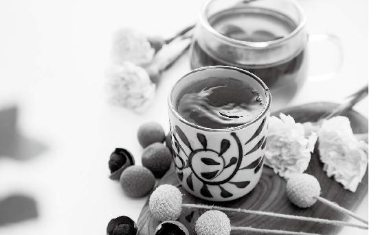

中国人的传统饮料，很多是由药方演变而来，体现了药食同源的中华特色。
乌梅汤——以乌梅为君药的传统方，是其中的一个经典。
它酸甜可口，是大众普遍喜爱的口味，而它的保健作用也同样适合普通大众，尤其适用于夏秋冬三季。

前文讲过，果菊清饮很好用，肺炎、流感、支气管炎、咽炎……只要是咳嗽痰黄都能用上它。
果菊清饮可以清肺排毒，它还是一种防病的代茶饮。
哪种情况可以喝果菊清饮防病呢？身体有湿热，并且经常有炎症、咽喉不适、皮肤问题等的人，可以常喝果菊清饮。
很多时候，比如说经过一个夏天，我们的身体容易蓄积湿热。
湿热，表现为“有形”和“无形”两种状态。
有形的湿热：各种炎症，比如肺炎、咽炎、妇科炎症、前列腺炎、肾盂肾炎……
这些炎症往往伴有黄色分泌物，比如鼻涕黄、痰黄、小便黄、白带发黄，另外还会有脂溢性脱发、面部油脂分泌过多、长带有脓头的青春痘等症状。
对策：果菊清饮。
原料：鱼腥草15〜30克，菊花（如果肺热重，可以把菊花换成野菊花）3克，罗汉果1个。
做法：将罗汉果压破，和鱼腥草、菊花一起分成三份，每次取一份放入保温杯闷泡 30 分钟后饮用，一日三次，或一次煮好喝一天。
功效：消炎，抗敏，清肺热，调理慢性咳嗽、咽炎、黄痰、青春痘。
适宜人群：经常长痘、咳嗽痰黄、小便黄、白带黄、咽炎、慢性炎症、吸烟、三高、空气污染及雾霾地区的人。
我老公得脑出血，在重症的时候肺部感染，反复发热，我只能眼看着医生反反复复地给他打抗生素。后来到了康复科后，只要他有一点黄痰或者小感冒之类的症状，我就给他用罗汉果、鱼腥草调理。老公长时间躺着，没办法自主用肺呼吸，但自从给他用了果菊清饮后，即使发热也就是持续半天，而且发烧度数不会很高。肺部不再反复感染，这样他就一天比一天好了。
——邹小青
罗汉果的功效与主治：清热润肺，利咽开音，滑肠通便。用于肺热燥咳、咽痛失音、肠燥便秘。
鱼腥草的功效与主治：清热解毒，消痈排脓，利尿通淋。用于肺痈吐脓，痰热喘咳、热痢、热淋、痈肿疮毒。
菊花的功效与主治：疏风清热，平肝明目，解毒消肿。主外感风或风温初起、发热头痛、眩晕、目赤肿痛、疔疮肿毒。
野菊花的功效与主治：清热解毒，泻火平肝。用于疔疮痈肿、目赤肿痛、头痛眩晕。
我鼻干、咽干，疼得厉害，喝了两天果菊清饮，吃了一天水泡花生，鼻子润了，嗓子也不干了，基本不疼了，太神奇了。
——24群读者
老师的书上说，白菊花保护心脑血管，我就有点这种症状，前不久后背心脏的地方还有点疼，喝了果菊清饮很舒服。
——张亿歌
我买了老师的《茶包小偏方，喝出大健康》，里面的果菊清饮和退热方都体验过，太神奇了。
——韦美娟
今年我时不时地喝点果菊清饮，还有防流感的梅子汤，孩子和我的抵抗力都比往年好多了！前几天妈妈说喉咙痛，我判断是外寒内热，虚火上行，我泡了杯红糖+ 胡椒粉给她喝，她第二天早上就好多了。
——韩仟瑜
我前天出去一趟，回来洗了澡，晚上感觉嗓子疼，喝了两支藿香正气水，就睡了。昨天早上起来还是感觉嗓子有点疼，老公接着煮果菊清饮给我喝了一天，让孩子也跟着喝，晚上睡觉已经感觉不出嗓子疼了。（新冠肺炎）非常时期出不去，老师的方子起了大作用。
——31群青柠檬
允斌点评：嗓子疼不宜用藿香正气水，喝牛蒡茶或果菊清饮都可以。
中国人的传统饮料，很多是由药方演变而来，体现了药食同源的中华特色。
梅汤——以乌梅为君药的传统方，是其中的一个经典。
它健脾益胃，调肝利胆，滋阴养血，既能治疗各种疾病，又特别适合日常保健。
从周朝天子饮宴中的梅浆，到唐宋的各种梅汤药方，梅汤亦食亦药，看似平常，但是屡屡在治病时收到奇效，传承千年不衰。
清宫中，帝后日常离不开这一碗保健品。
八国联军入京，慈禧太后逃到陕西，仍然坚持喝酸梅汤，派人往太白山取冰制作，后来传入民间，变成老北京人记忆中不可或缺的风味。
梅汤酸甜可口，是大众普遍喜爱的口味，而它的保健作用也同样适合普通大众，尤其适用于夏秋冬三季。
暑天之冰，以冰梅汤为最流行，大街小巷，干鲜果铺的门口，都可以看见“冰镇梅汤”四字的木檐横额。有的黄底黑字，甚为工致，迎风招展，好似酒家的帘子一样，使过往的行人，望梅止渴，富于吸引力。
——徐凌霄《旧都百话》
酸梅汤其实并不寒凉，而是清补的。
清补：清虚热，补阴虚，防止暑热伤身。
止汗：防止出汗过多伤气。
健胃：调理暑热造成的食欲不振、消化不良。
天热，人体出汗多，容易伤阴。伤阴之后容易引起虚热。比如睡觉出汗、手脚心发热、心里烦热，这样的热就是虚热。
所以夏天合家老小喝酸梅汤，是中国人一个很好的传统养生习惯。
每年的三伏天，我们都要喝黄芪补气。如果觉得有点火气，可以把黄芪与酸梅汤一起煮，这样不容易腹胀，而且可以增强瘦身的效果。
梅汤不仅好喝，而且屡屡在治病时收到奇效，因此成为传承千年不衰的国民保健饮料。
这要归功于乌梅的神奇功效。
乌梅是由半黄梅子制成的。梅子延寿的作用，乌梅也具备。
梅子是天然的降脂药：梅子分解脂肪的能力特别强，所以平时喜欢吃油腻食物的人，可以多吃梅子来防止脂肪过剩。
梅子能抗衰老：梅子的酸味，会刺激腮腺分泌腮腺素，让皮肤更有弹性。其中，腮腺激素（“返老还童激素”）能增加人体肌肉、血管、骨骼和牙齿的活力。
梅子专入肝经，以排毒为主，而炮制成乌梅，就神奇地变成了大众适用的清补药。
人们以为酸梅汤就是酸甜味，其实真正的养生梅汤，喝起来应该有微微的苦味，闻起来还有淡淡的草烟味。
煮出来的汤颜色清亮，并没有常见的酸梅汤那么深。
因为传统炮制的方法，不用煤火也不染色，而是用百草来烟熏。这样制成的乌梅，性味变为苦温，补肝不上火，又增添了健胃、固肾的作用，还有独到的功效。
人体秋收冬藏，如果收藏不力，可以用乌梅来帮助。
我经常讲肉桂、胡椒粉可以“引火归元”，虚火上浮时要用到它们来往下引。
人体的五脏之气，也和火一样，会逆行，不走规定路线，使身体出现问题。
比如，肺气如果往上逆行，就会引起咳嗽。
而乌梅能把人体内乱窜的气收回原位，这叫理气而不伤气，既纠正了气的逆行，又不伤害人体的正气。
有的人肠胃不太好，吃了不干净的东西后，肠炎几天都好不了，喝乌梅汤可以调理。
乌梅汤还可以增强肝脏的解毒功能，消除疲劳，软化血管。
梅汤治起各种疾病来，也毫不逊色于药物。
这要归功于乌梅的传统炮制方法——百草烟熏。
酸梅汤有各种版本，但如果较真起来，有的只能当作解渴的饮料来随便喝喝。
要起到养生治病的作用，乌梅的真假、品质是前提。
我经常发现乌梅有掺假的现象，有的用桃子、李子、杏子的幼小落果来冒充。
鉴别点：
尝——桃子冒充的乌梅味道不够酸。
看——剥掉果肉看果核，李子、杏子的果核外观有点不同。
现在采用传统炮制方法的人越来越少了，很多人是用煤熏法和染色法。
劣质乌梅——炭熏染色梅。
染色乌梅——用煤炭甚至硫黄快速烘干梅子，染成黑色。
鉴别点：梅子整体呈现均匀的黑色，煮出来的汤汤色浑浊，有焦味。
劣质乌梅煮出来的梅子汤色香味都不佳，因此现在的配方越做越复杂，掺入洛神花等各种材料来调色调味，喧宾夺主，已失去了乌梅为君药的本义。
传统的梅子炮制方法是非常讲究的。
方法：采摘半黄梅子，炕焙2〜3天，炕下面放上干草和树枝并燃烧，利用烟来熏制梅子，熏到颜色棕褐，起皱皮，再焖制2〜3天，直到果皮和果肉都变成黑色，就成了道地的乌梅。
特点：梅子颜色不均匀，煮出来的汤汤色清亮，喝起来酸中微苦，并有一种淡淡的草烟味。
这样的梅子制成的梅汤才有养生治病的作用。
原料：乌梅 6 个，川陈皮 1/4〜1/2个，大枣 6 个，山楂 10 克，甘草 5 克。
做法：沸水闷泡30分钟，有条件煮水更佳。
允斌叮嘱：
1. 孕妇饮用时需要减去山楂。
2. 女性经期不饮。
3. 怕酸的人可以加入一个罗汉果一起煮，就会甜了。
甘草陈皮梅子汤不仅可以调理肠胃的问题，同时有一定补血的作用。全家人平时都可以经常喝它来保健。
我在喝甘草陈皮梅子汤，加山茱萸一起泡水喝可以补肾虚，喜欢老师的茶包小偏方！
——畅然
昨天吃多了上火食物，今天煮乌梅汤喝，喝了一杯，喉咙很舒服。
——南冰韵
前段时间我家孩子一直咳嗽，有痰音，近几天每到晚上手上就有很多小红点，早上起床又没有了，连续几天都这样。我用甘草、陈皮、乌梅汤煮水给孩子喝，喝了第一天，痰就少了很多，第二天、第三天就全没有了，连咳嗽声也听不到了，痰也没了。真的特有效。
——晴天
张亿歌问：请问老师，煮甘草陈皮梅子汤，可以加山茱萸吗？谢谢老师。
允斌答：可以的，这样就是我以前讲过的“茱萸梅子汤”，它更偏补一些，养肝血，固精气。
行者问：最近这些日子每日都在喝加强版梅子汤，还加了当归和山茱萸。酸酸甜甜，喝了口不干舌不燥，开胃消食，固表补气血，助睡眠。每次喝完睡觉都特别好，还有去痘的功效。我发现喝一段梅子汤，唇周围和下巴上若隐若现的“小颗粒”消失不见了。这下，又学会一招：加上两个鲜橘皮或橙皮，能防治流感。
允斌答：梅子汤对于消除脸颊和手臂的毛囊角化颗粒，效果也很好。
Sunshine问：老师，这种乌梅汤煮好后，可以放冰箱存放几天啊？
允斌答：尽量不要存放，最好是食材配好之后现煮现喝。
我曾在电视里讲过 2013 年给一位 40 多岁的朋友调理身体的故事。那时她觉得自己从头到脚都有毛病，失眠，全身这里冷那里痛的，还怀疑更年期提前了。我给了她一个小方，她服用后，各种不适都缓解了， 月经也如期而至。
后来，我把这个方子进一步完善，做成了桂芝陈皮四物红糖膏方，读者朋友自己不方便熬膏的话，可以做成简易版——桂芝陈皮羹。
如果身体下面有寒，上面有火，可以喝桂芝陈皮羹，来祛下焦寒瘀，清上焦虚火。
原料：肉桂6克，木耳1小把，陈皮1个，枸杞子1大把，红糖适量。
（自测平时是否有以下情况：暴饮暴食，喝酒过量，咳嗽发热。若有，则加入牛蒡同煮，煮过的牛蒡片也可以吃掉。）
做法：将肉桂、木耳、陈皮、牛蒡加水炖1个小时，放入枸杞子和红糖搅拌均匀后关火。
功效：补肾，养胃，调理贫血。祛下焦寒瘀，清上焦虚火。
适宜人群：血瘀体寒却又经常上火的人。
方中的主药是肉桂，它是调料，也是补肾阳的中药。
肉桂与许多其他补阳药不同，它既能祛除寒瘀，使人全身暖和，还能防止虚火，因为它有引火归元的作用，可以把人体的虚火往下引。
所以我把肉桂比作“补肾药中的君子”，补得温厚，不浮不躁。
桂芝陈皮羹这个食方中也配了陈皮。陈皮有三大作用：健脾，燥湿，化痰。
我把陈皮比作药中的“贤妻良母”。陈皮很百搭，“同补药则补，同泻药则泻”。补药有了它，能增强补的功效；排毒药有了它，能增强排毒的功效。
“谦谦君子，温润如玉”，是肉桂的写照。
“之子于归，宜室宜家”，是陈皮的写照。
陈皮与肉桂相配，好比“夫唱妇随”，有珠联璧合之妙。
我昨天下午胃痛，晚上九点多我泡了一块桂芝陈皮四物红糖，有点中药味，我边喝边把杯子放在胃部，当时就感觉有缓解。喝完后，我把茴香盐包加热，热敷了三次，最后抱着盐包睡觉了。今天早上胃好了。
——31群雪天
无意中看到有文章介绍说，经期吃桂枝茯苓丸可以调理囊肿。我抱着试一试的心态，经期的时候，在当归蛋中加入桂芝陈皮四物红糖，只坚持了两个月，一侧的囊肿已经消失了。
——倩倩
这个月经期吃了桂芝陈皮红糖和茯苓内金红糖，感觉量多起来了，腰不酸了，还有血块排出来了。肚子一开始有点胀，血块排出后，肚子舒服多了。
——26群读者
我一有点儿口腔上火，就喝桂芝红糖，很快就好了，实验多次，效果很好。
——小木
来例假喝了桂芝陈皮四物红糖膏方，真的好舒服，腰不酸了。
——轻舞燕燕
精灵豆问：老师，您在书中说春天不宜吃太多红糖，易上火，但（2020年）立春节气推荐吃的桂芝陈皮羹里有红糖，我可以这样理解吗，桂芝陈皮羹食材里君臣辅佐，可以抵消纯红糖易上火的特质？
允斌答：对的。食方就像中药方，不能看单一原料的药性，要看组合的功效。
天生万物，独厚五谷。
现在流行“不吃主食减肥法”，我真的很担心年轻的朋友们长期这样做，未来会付出惨痛的代价。所以我在电视、电台等各种传播媒介讲课时，有机会就讲它的危害。
作为中国人，基因决定了我们要多吃五谷杂粮等主食，否则难以常葆青春。
古人通过千年的实践，对各种杂粮有何功效，何时宜吃、何时不宜吃，都有细致入微的区分，这在《黄帝内经》《千金方》等古代医书中都能找到。
在不同的年份、不同的气候阶段恰当地选择和搭配杂粮，顺时而食，只要每日坚持，比人参虫草滋补的作用强多了。
遵照古代医书中的方法，我们可以把不同年份宜吃的杂粮搭配成顺时粥方，每年调整。有条件的话，还可以在冬天和春天吃一种配方，夏天和秋天吃一种配方。
举个例子，去年我发给大家的冬春顺时粥配方，是用来在2019年冬季到2020年春季喝的（见本书第21页）。这里有什么特殊之处呢？
第一，加了绿豆。绿豆是清湿热、排肝毒的，一般我们冬天不常吃，为什么这个冬天要吃呢？
《顺时生活》（2019健康日历）书中曾提示过：2019年湿气将比较重，到了冬天还会有湿热。所以这期间的顺时粥整体配方强调祛湿，配合清热排毒。（补充：最新发布的2019全年气候报告印证了这一点：2019年降雨比常年偏多，而且日照偏少。）
第二，加了红高粱。这个是跟前两年的顺时粥不一样的原料。
为什么要用红高粱呢？红高粱也是帮助我们身体“固”的。固就是黄芪“固表”那个“固”字的意思——加固、增强我们身体对外的防御能力。
把它们搭配杂粮一起煮粥，每日全家一起喝是最好的。到了春天，还可以把它煮成顺时七宝粥，也就是在里面加上各种时令蔬菜（2020年给大家建议的是荠菜、萝卜缨、香菜、葱叶，为的是抗呼吸道病毒），把这些菜切得碎碎的。先煮顺时粥，当粥快煮好的时候，往粥里放一点儿油，放一点儿盐，再把切碎的菜放进去，稍微一煮，就可以起锅了，味道清香，很好喝。
由于每年的饮食重点不同，我在此无法给大家一个通用方，只提示一下，顺时粥是可以与节令粥合并的：
① 春季，煮顺时粥可以加蔬菜，煮成顺时七宝粥；
② 夏季，煮顺时粥可以加黄芪，煮成顺时黄芪粥；
③ 秋季，煮顺时粥可以加银耳，煮成顺时银耳粥；
④ 冬季，煮顺时粥可以加陈皮，煮成顺时陈皮粥。
一年四季，顺时粥的配方里都可以加茯苓，这样吃既能健脾祛湿，还能让皮肤更白； 还可以加莲子、桂圆、党参等滋补食材一起煮。
每日起床后喝一碗顺时粥加枸杞子、桑葚、红莲、桂圆肉、葡萄干，天天精神特棒，二胎宝宝也特别好带。
——宋芊
吃了顺时粥两个月左右，最近发现它能调理我的入睡慢问题。我以前经常晚上 10点上床，12点左右甚至凌晨两三点才能睡着。但最近不知不觉很快能入睡，心想除了顺时粥没吃什么，而且我还放了个鸡蛋进去，等于米粥煮鸡蛋，又能补气血。
——57群淇淇（东莞）
我觉得冬春款顺时粥最好吃了，现在天天都吃，12月体检时同事们都有湿气重的问题，而我没有。
——蔷薇路
春季病毒活跃，我们可以多吃辛味蔬菜。立春时吃五辛盘（各种辛味蔬菜），还可以将蔬菜放到粥里，煮成七宝粥，全家每日当早餐吃。
七宝粥里所用的蔬菜，可以任意选择品种，最好多选一些辛味的菜，以助人体抗病毒。
南方可以采摘野菜，比如荠菜和繁缕。
北方的朋友可能感觉在早春时集齐七种蔬菜有点困难，那就用一些现成的家常菜，没有萝卜缨可用萝卜（带皮），没有小葱可以用大葱叶。
我住在北京，虽然早春还会下雪，但是北方封闭的阳台就像个小温室，天再冷也能自己种点小葱、麦芽和蒜苗。
还有不请自来的野草——繁缕，立春后长得更茂盛，放少许在七宝粥里，有清热利咽的作用。
原料：芹菜、荠菜、芥菜、韭菜、香菜、大蒜、蒜苗、葱叶、蔓菁、繁缕、油菜薹、萝卜缨或带皮萝卜（以上任选七种），杂粮（可以用顺时粥的配方）。
做法：1.先煮一锅杂粮粥（顺时粥），放少许油和盐。
2.粥快煮熟时，加入切碎的七种蔬菜再煮熟。
功效：排浊，祛湿，健脾胃，升发阳气，抗病毒，预防春季流行病。
七宝粥是帮助我们身体排浊的，也就是排出毒素的，同时它还能够打开我们身体气的通道。
进入春天后，我们调理身体的方法，跟冬天是不一样的。我们要打开身体，打开身体气的通道，让积存一冬的毒素都排出去。这样身体干干净净的，才不容易生病。
昨天晚上吃了七宝粥，今天早上大便了两次，很畅快，肚子空空的，特别舒服。到八点多肚子饿，看来是肠毒被清理出去了，胃气恢复了正常。
——小双
今天变换做七宝粥，香菜、荠菜放得多，太好吃了。
——张亿歌
陈老师您好！看到你说的七宝粥，我在自家的菜园子里找到了：荠菜、香菜、韭菜、大葱、蒜苗、茴香、藿香、小根蒜、面条菜，等等。做了七宝粥，家人都说好吃。
——玉镶金
七宝粥中用的萝卜缨是什么呢？就是萝卜上面的绿叶。如果家里没有，我们也可以自己养萝卜缨。
您可以把萝卜头切下来，放在一个盘子里，再加一点水，每日保持湿润，它就会自己长出萝卜缨来。
假如没有时间养萝卜缨，直接吃带皮的萝卜也可以。
小时候家里人吃萝卜的时候，爸爸总爱说上一句：“萝卜上了市，医生没了事。”
萝卜要是吃好了，比药还灵，但要吃对它，有两个关键：
什么时候生吃？什么时候熟吃？
吃萝卜是否要带皮？
春季病毒活跃，如果发现自己或家里的老人、孩子开始轻微干咳，不要掉以轻心，马上给他们吃几片生的白萝卜。最好是细细地嚼碎了，慢慢地咽下去。
没有白萝卜，也可以用青萝卜、红萝卜或是心里美萝卜，但不要用胡萝卜。
生吃萝卜可以刺激人体产生“干扰素”，对呼吸道病毒很有效。萝卜皮也有止咳的作用。
记得一感觉到有干咳的症状要立即吃，不要耽误治疗。
萝卜生吃与熟吃的功效有什么区别？生萝卜生津止渴，祛风热、抗病毒的效果好；熟萝卜健脾消食，下气、化痰、促进消化排泄的效果好。生萝卜能止痢疾腹泻，而熟萝卜却有助便的功效。
哪些情况适合吃生萝卜？
① 风热感冒；② 肺热咳嗽(咽痛、痰黄)；③ 口干舌燥、咽喉嘶哑；④急性肠炎、痢疾。
哪些情况适合吃熟萝卜？
① 消化不良；② 腹胀积食；③ 胸闷痰多；④ 大小便不利。
每年我都会吃老师推荐的五辛菜，我管它叫“春天的味道”。将韭菜、荠菜、香菜、萝卜缨、芹菜切成碎末，水里放点盐和猪油，水开后撒进锅里，煮一分钟关火，好美味的一道汤，清淡无异味，却隐藏着无穷魅力，喝一口下去，就感觉生活很平淡，却蕴藏着五味在里面。要用智慧去生活，才能发现它的美！
——祝福
萝卜缨和荠菜在市场买不到，我就在家门口的一小块荒地种上，终于赶在今年的春天能吃上了。吃好平常的一粥一饭、一菜一汤、一茶一饮，到了疾病面前就不慌。
——小芳芳
几天前我就开始煮七菜羹吃了，今天早晨用顺时粥加七菜做的七宝粥更是异常美味，喝下去暖暖的，整个人都元气满满。
——杨杨
居家防疫，自己在家里发绿豆芽、红豆芽、豌豆尖、萝卜苗，又种了油菜、大蒜和小根蒜，鱼腥草长出了一些叶子，两盆穿心莲长势喜人。今天早晨用自己种的菜煮了顺时七宝粥喝，满满的成就感。
——杨杨
阿凡提问：陈老师你好，前几天开始喝七宝粥，喝完之后， 肚子里的垃圾都排出来了，肚子可软了，痔疮也没有了。请问陈老师，这个七宝粥能不能长期喝呢，还是就这个季节喝？
允斌答：可以长期喝，所放的蔬菜可应季调整。
瑞问：昨天煮了七菜，不过加了面条，这样可以吗？
允斌答：可以的。
映山红问：非常时期不敢出门，能不能用去年保存的荠菜干品煮水喝？还有新冠肺炎是由于湿气太重，我能不能用荷叶陈皮茶祛湿呢？
允斌答：可以的。家里有什么就用什么。
Cacy问：老师，全身肌肉酸痛和头痛差不多十天了，每日喝姜葱水（按照您说的，吃掉姜和葱）和鱼腥草茶，也吃百合莲子银耳粥，感觉有些好转。请问还可以吃什么来提高抵抗力？
允斌答：七宝粥就很合适。
英子问：老师好！七菜羹，菜不齐，就有四到五种，不知这样可以吗？煮好后全家人都说好吃，很鲜，很香。
允斌答：可以的。虽然不齐，但比不喝要好很多。
金银花是清热解毒的常用中药，双黄连口服液、银翘感冒片和银翘解毒片都以金银花为主药，但是这几种中成药还配伍了寒凉的黄芩、连翘等中药，只能用来治热病，不能用来当预防药随便吃。
在新冠肺炎疫情期间，社会发生抢购双黄连事件。其实，双黄连很寒凉，吃多了伤阳气，反而会降低身体的抵抗力，适得其反。
与其抢不能随便服用的双黄连，不如在家里备点金银花。它是药食同源的，再配上甘草调和，大人、儿童都能喝。
对于流脑、乙脑、手足口病等病毒感染者，常喝银花甘草茶有预防的作用。其对调理肺火引起的青春痘和夏季的日光性皮炎也有好处。
原料：金银花干品10〜30克（或鲜品一大把），生甘草3克。
做法一：把金银花干品与生甘草用开水烫洗一下，放入茶壶，用沸水闷泡。
做法二：1.把生甘草用开水烫洗一下，放进茶壶，冲入小半壶开水，闷10分钟；
2.把洗干净的新鲜金银花放入茶壶，冲入70 ℃的开水，不要盖壶盖，泡5分钟后就可以喝了。
功效：清凉解暑，清热解毒，预防青春痘，预防小儿传染病。
允斌叮嘱：1.风寒感冒时暂停饮用，风热感冒可以喝。
2.金银花现在按品种分为两类：金银花和山银花。它们都是可以用的。
3.金银花寒凉，平时泡饮，必须用到甘草，才能调和它的药性。
在盛夏时节，全家人包括孩子喝这道茶都很好。
有些小朋友如果不喜欢甘草的味道，可以加蜂蜜调味。
补充：银花甘草茶是通过清肺火来预防青春痘的。预防或治疗不同的痘，方法不一样：
① 下巴长痘——预防：姜枣茶（四季），急性期：果菊清饮；
② 长期反复发作的痘——果菊清饮；
③ 平时护理——马齿苋外敷。
去年（2019 年）湿气真的非常重，好几年没有长痘痘的我， 竟然疯长痘痘。仔细反思，去年也就是没喝银花甘草茶，没想到“湿”和“热”狼狈为奸，左右脸颊长了大片痘痘，虽然用食方控制住了，但是痘印真的很难消除。从去年冬季开始，我越来越感到虚火上炎，头面浮游，即使喝了两个月的果菊清饮，虚火依然。湿热风，都在助长虚火。强烈感受到陈老师所说的是正确的，越年轻越要开始养生，否则阴阳、气血、心肝脾肺肾等若有一样失调，就会处处闹心。
——Donna
尽管我买了双黄连（口服液），那也只是备着，老师也说了，只适用于风热感冒。
——Shaala
今年没有跟风抢各种中成药，心里比以往都要淡定。一直喝果菊清饮，配合祛湿。风寒时用葱姜陈皮水，北方下雪天冷时喝姜枣茶，嗓子疼时喝牛蒡茶，家里没有酒精，就用白酒给孩子擦鼻腔，用稀释的酵素液洗漱……针对身体出现的毛病及时调理， 家里老人和小孩都容易接受，也非常配合。
——木兰花